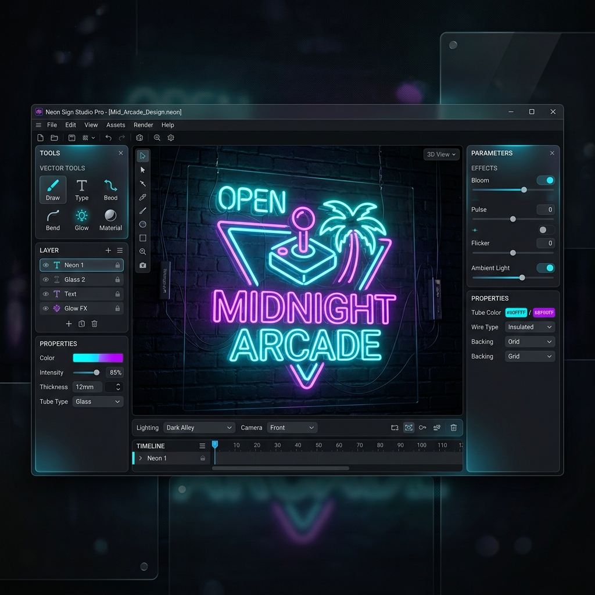

From Illustrator to Engravity: your first academic project

If you're in industrial design, visual communication, or architecture school, you probably already know your way around Illustrator, Figma, or CorelDRAW. You've made identities, posters, and pretty mockups. But one day your professor (or a client, or you yourself) asks for something different: that your design becomes a physical object. A plate. A sign. An object someone is going to touch.
That's where the programs you know fall short. This guide is for that moment.
1. The mental shift: from pixel to material
Designing for the screen is designing with light. Designing for fabrication is designing with matter. The difference isn't only technical — it's conceptual. On screen, your file IS the final piece. In fabrication, your file is just a set of instructions a machine carves into a piece of acrylic, wood, or aluminum.
Three things you'll have to internalize:
- Measurements are real. If you draw text 0.5 inches tall, it comes out 0.5 inches tall. No magical scaling. No "it looks fine in the mockup."
- Stroke widths matter. A 0.1 pt line looks thin and elegant on screen. That same line cut on CNC simply doesn't get cut — the bit is thicker than the line itself.
- Depth exists. Illustrator is 2D. An ADA sign is 3D: it has layers, thickness, and tactile relief. You have to start thinking in Z.
2. Bring your .ai into Engravity
The good news: you don't have to abandon Illustrator. Engravity natively imports .ai, .svg, .dxf, and .cdr files, preserving layers, editable text, and gradients. Your workflow stays familiar.
A typical first-academic-project workflow:
- You design in Illustrator the way you already know how (composition, color, typography).
- When the piece is ready, you export it as
.aior.svg. - You open Engravity, create an "ADA Sign" or "Custom" project, and drag your file onto the canvas.
- Engravity shows your design in the context of a real sign: with the physical layers (face, backer, laminate) and the materials you'll actually use.
3. What your professor will grade (that you didn't know about)
In academia, the visual proposal gets graded. In industry, manufacturability gets graded too. These are the criteria that show up the day your design has to be produced:
- Real contrast: the color contrast that looks fine on your Retina MacBook can be illegal under ADA when it's printed on aluminum. Engravity flags this in red the moment it crosses the threshold.
- Tactile typography: signs that get touched cannot use serifs, italics, or extreme bold weights. The rule sounds arbitrary, but it's based on how fingers perceive relief.
- Minimum thickness: any line or detail thinner than the bit's diameter simply doesn't exist in production. Respecting this early saves hours of rework.
- Engraving depth: raised text must protrude at least 1/32" from the background. Illustrator files don't carry this information — Engravity adds it.
4. Your first hybrid deliverable
Once your piece passes Engravity's validator, you can generate three deliverables that set you apart from the rest of the class:
- Real 3D render: not a Photoshop mockup but a volumetric simulation with accurate materials. You present it and it looks professional.
- ADA report PDF: proves your design meets federal standards. In an academic submission, that's gold.
- G-Code file: if your school has a CNC, your piece can be physically produced that same afternoon.
Closing
The jump from Illustrator to Engravity isn't about learning another program. It's about learning another way of thinking: from design-as-image to design-as-object. That shift is what separates designers who deliver mockups from those who deliver real pieces people use.
And that transition is easier to make while you're still studying — without the pressure of a client waiting.